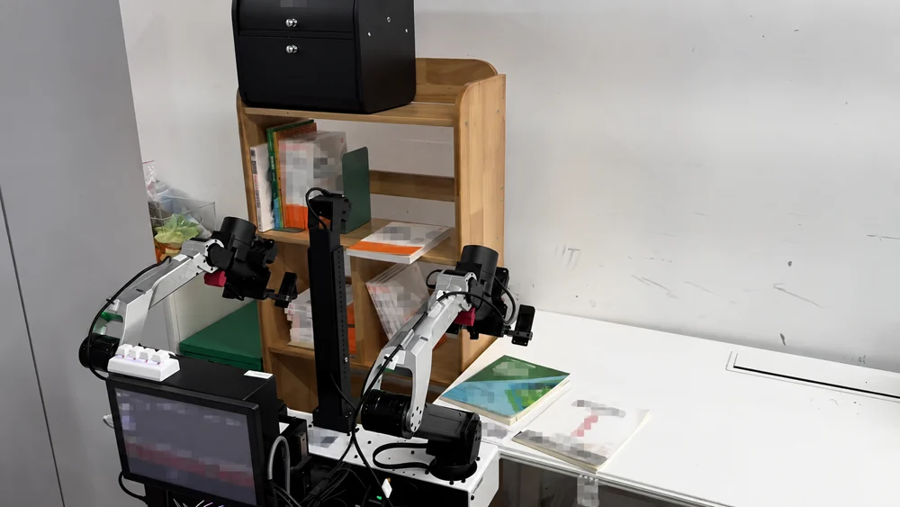
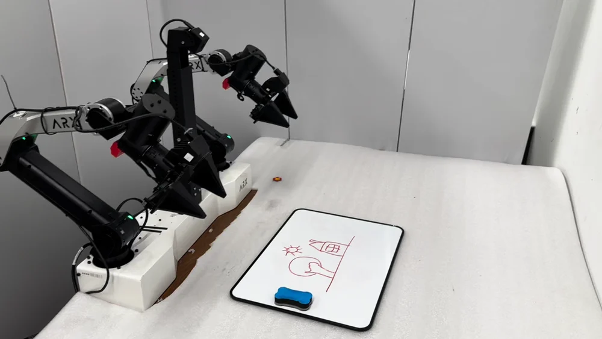
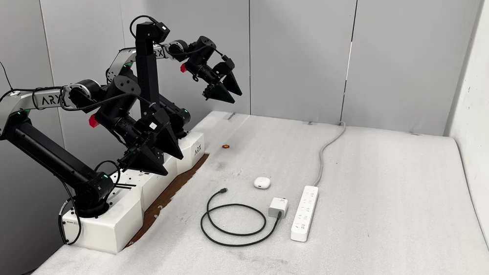

Predict a continuous trajectory
A fixed window of cubic B-spline parameters decodes into a variable number of control steps.
World action models usually predict fixed-length action chunks. SplineWAM instead predicts a fixed-size set of B-spline parameters whose knot times determine the motion’s duration and resolution. Video supervision follows the same adaptive time axis. For asynchronous execution, Jacobian-Pullback Real-Time Chunking (JP-RTC) maintains continuity in the actions the robot actually executes. Across two simulation benchmarks and three bimanual real-world tasks, SplineWAM matches or improves task success while executing more control steps per policy call.
SplineWAM-Knot vs. action chunking · synchronous evaluation · default execution settings.
Free-space motion is smooth and predictable over longer intervals; grasping and insertion require finer resolution and frequent feedback. Fixed action chunks spend unnecessary policy calls on free-space motion yet can delay replanning near contact. For a large WAM backbone, these redundant calls also limit the throughput of shared cloud inference.
Let the action representation decide how far to act and when to replan.
For an interactive introduction to B-splines, visit B-spline Policy.
A fixed window of cubic B-spline parameters decodes into a variable number of control steps.
Sample training video frames at fitted knot times, concentrating supervision around complex motion.
JP-RTC corrects spline parameters through the decoder to match the actions already committed.
Three bimanual tasks with asynchronous execution. Thirty trials per method, per task.
| Method | Arrange Bookshelf | Charge Earphone | Clean Whiteboard | ||||||
|---|---|---|---|---|---|---|---|---|---|
| SR (%) ↑ | PG (%) ↑ | Chunk | SR (%) ↑ | PG (%) ↑ | Chunk | SR (%) ↑ | PG (%) ↑ | Chunk | |
| Action Chunking | 20.0 | 52.2 | 32.0 | 26.7 | 73.3 | 32.0 | 50.0 | 67.5 | 32.0 |
| SplineWAM + Naive RTC | 10.0 | 35.6 | 39.8 | 13.3 | 43.3 | 46.5 | 46.7 | 68.3 | 53.3 |
| SplineWAM + JP-RTC | 23.3 | 54.4 | 38.6 | 26.7 | 57.5 | 45.7 | 60.0 | 74.2 | 52.4 |
Table 2. SR requires all task nodes; PG is the mean fraction of nodes reached. Chunk is the mean number of executed control steps per policy call, not a speedup in wall-clock time.
Naive RTC executes longer chunks but achieves lower SR and PG than JP-RTC on all three tasks. JP-RTC executes 1.2–1.6× more steps per call than action chunking; the largest success gain is on the highly compressible Clean Whiteboard task (+10.0 pp).
Trade-off. On Charge Earphone, JP-RTC matches baseline success (26.7%) but reaches fewer task nodes on average (57.5% PG vs. 73.3%). Precise socket insertion remains a limitation.
Playback rates below are relative to the supplied recordings.

Move between the desk and shelf to place three books upright, using the Lift-2S mobile platform.

Identify the remaining marks, erase the board, and return the eraser to its holder. The repetitive strokes make this the most compressible task.

Plug the charger into the wall socket, then insert USB-C into the earphone case. Both insertions require precise alignment.
The plot follows a successful Charge Earphone trajectory with JP-RTC. Horizons lengthen during free-space transport and shorten around gripper closure, contact, and insertion.
Synchronous evaluation with the same Fast-WAM backbone, demonstrations, and training budget.
Zero-shot LIBERO-Plus. Models are trained on LIBERO and tested directly under LIBERO-Plus perturbations, without adaptation or fine-tuning.
| Action representation | LIBERO-Plus (zero-shot) | RoboCasa | ||||
|---|---|---|---|---|---|---|
| Success ↑ | Calls/ep. ↓ | Steps/call | Success ↑ | Calls/ep. ↓ | Steps/call | |
| Action Chunking | 66.3% | 33.6 | 8.00 | 69.1% | 21.9 | 16.00 |
| BEAST | 66.6% | 35.5 | 8.00 | 65.0% | 24.6 | 16.00 |
| Naive B-Spline w/o video | 60.0% | 38.7 | 7.92 | 55.0% | 32.7 | 14.26 |
| Naive B-Spline | 70.7% | 27.3 | 8.36 | 69.5% | 16.9 | 17.98 |
| SplineWAM-Window | 73.3% | 27.1 | 8.39 | 71.9% | 17.5 | 18.10 |
| SplineWAM-Knot ours | 74.5% | 26.2 | 8.41 | 73.5% | 16.3 | 18.18 |
Table 1. Success is episode-weighted; calls count policy-model invocations. Steps/call counts executed control steps. Results are single-run point estimates.
Removing video supervision from Naive B-Spline reduces success by 10.7 pp on LIBERO-Plus and 14.5 pp on RoboCasa.
When varying the execution budget, SplineWAM matches the action-chunking baseline’s best success rate with 2.2× fewer policy calls on RoboCasa and 2.5× fewer on LIBERO-Plus. These are matched-success operating points from the ablation, distinct from the default settings above.
@unpublished{guo2026splinewam,
title = {SplineWAM: Adaptive Action Horizons for World Action
Models via B-Spline Representations},
author = {Guo, Jun and Han, Xiaoshen and Li, Qiwei and Sun, Nan
and Li, Peiyan and Wang, Heyun and Lai, Hang
and Zhang, Weinan and Li, Xinghang and Liu, Huaping},
note = {Manuscript},
year = {2026}
}